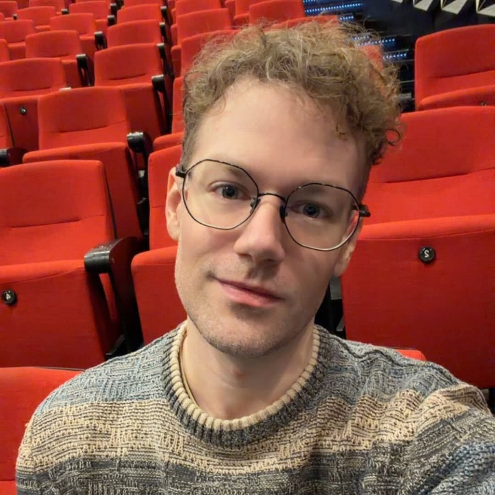

I help leaders understand AI, emerging tech & the future of work with humour, rigour & real-world relevance.

My career began in IT automation at BNY Mellon. In three months, four of us built systems that displaced nearly three thousand accountants.
What followed kept placing me inside the same dynamic. Cybersecurity, IT consulting, management consulting, and eventually HR leadership at Telstra, directing M&As and large-scale enterprise transformations — integrating business units, redesigning processes, redefining roles, and overseeing the retrenchments that resulted.
I kept landing in the same situation across very different industries, close enough each time to see what the technology did for the business and to the people on the receiving end. That eventually drew me back to academia, to research how AI and automation reshape labour markets, what it does to people's careers, and how leaders perceive and act on the technologies they're deploying.
My research sits at the intersection of labour economics, automation & organisational behaviour. Using clustering methods on large-scale job-advertisement data, I examine how occupational tasks are being quietly redistributed. I am completing my PhD thesis at RMIT and preparing empirical work for journal submission.
A multi-agent AI platform that guides teams through the Double Diamond design process — eight specialised AI services, 30+ collaborative canvas tools, real-time multi-user collaboration.
A 30-minute AI-mediated oral defence where students defend their work to a lifelike executive avatar — grounded in their submission and scored against a formal rubric.
A scheduling tool that streamlines how sessional staff express interest in classes and how coordinators allocate teaching loads by expertise and availability.
An AI-powered writing assistant that helps academics turn research insights into accessible thought leadership for social media and broader audiences.
A digital-twin tutor for accounting & business maths — available at 3am, or whenever the panic hits. Guides students through the struggle rather than handing them the answer.
A semester-long, multi-agent simulation placing leaders inside the tensions of real AI transformation. Decisions compound; consequences are felt, not just discussed.
A book bridging technical AI literacy, HR strategy and leadership practice — a practical guide for leaders navigating workforce transformation.
I teach at the MBA and Masters level — making technically demanding material genuinely accessible, and connecting theory directly to industry practice.
Research collaborations, teaching partnerships, or conversations about AI & the future of work.